👪 How to Teach Your Kids with AI
Short, fun, together. No tech experience needed.
1️⃣ What it can do
2️⃣ How to make it
👉 Show me the steps
Sit with your child for 15 minutes.
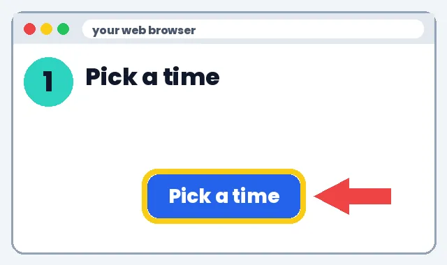
Go to gemini.google.com on your account.
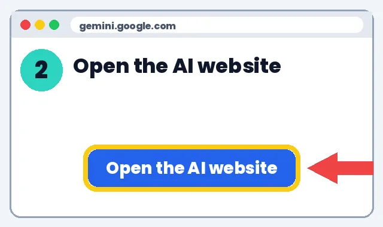
Paste this. Press Enter.
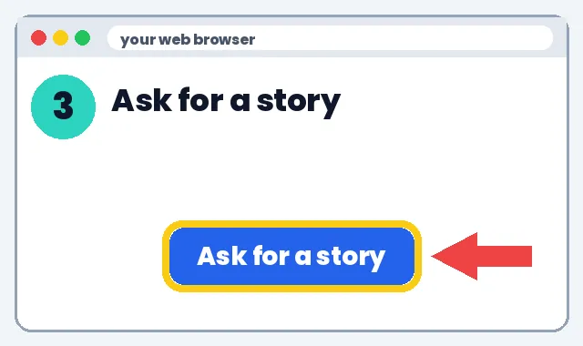
Read it out loud. Let your child answer.
Look it up in a book or on a trusted site.
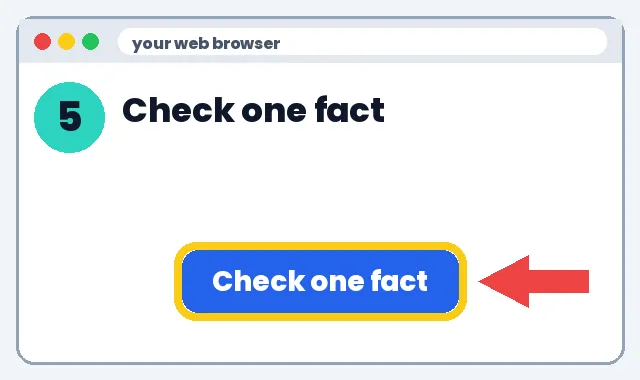
📋 Copy-ready prompts and home tips
AI as a tutor, not an answer machine
Tell the AI how to act. Example prompts:
- "You are a patient tutor for a 10-year-old. Don't give the answer. Ask one question at a time to help them figure it out."
- "Check my child's answer and tell them which step to look at again, without fixing it."
Reading and writing practice
- "Ask my child 5 questions about chapter 3 of [book], one at a time."
- "Give feedback on this paragraph: one thing that works and one thing to improve."
- Have your child read the AI's reply out loud.
Math, step by step
- "Show the first step only, then wait for my child to try the next one."
- "Give 3 practice problems like this one, easier to harder."
Spot AI mistakes
- AI can sound sure and still be wrong.
- Ask "How do we know?" and check one fact in a book or a trusted site.
- Make it a game: find the AI's mistake.
Talk with the teacher
- Ask what the school's AI rules are for homework.
- Ask which tools the class uses and whether home use is OK.
- Tell the teacher when your child used AI for help.
Screen-time balance
Keep AI sessions short and do them together. Mix in offline time: read a paper book, do the math on paper, sing the song away from the screen.
3️⃣ What to do next
Pick one link below and try it this week. Start small: one tool, one lesson, 10 minutes.
Learn more
🧸 Little kids 4–7
- 📖 AI story time: make up a story together
- 🎵 Make a song about letters or numbers
- 🔬 Ask AI “why is the sky blue?” together
🎒 Kids 8–12
- 🧠 Homework helper that explains, never answers
- 🎵 Times-tables or spelling song
- 🔬 Ask-AI science questions, then check in a book
- 💻 Show them how AI works (Code.org)
🎧 Teens 13+
- 🧠 AI study coach that quizzes them
- ✍️ Feedback on writing, not rewrites
- 🔍 Spot-the-AI-mistake fact checks
- 🎬 Music video for a class topic
🔍 Check for copying / AI cheating
- 🗣️ Best check: ask them to explain it in their own words
- 📝 Watch for a sudden style jump or facts they can't explain
- ⚠️ AI detectors can be wrong. Use them to start a talk, not as proof
🐕 How to build your kid an AI tutor
- Ages 13+ on Gemini; younger kids use it with you, on your account
Go to gemini.google.com. Click Gems. Click New Gem.

Type a name. Example: Fred Noseit Tutor.

Click Add files. Add study notes. No names, school or photos.
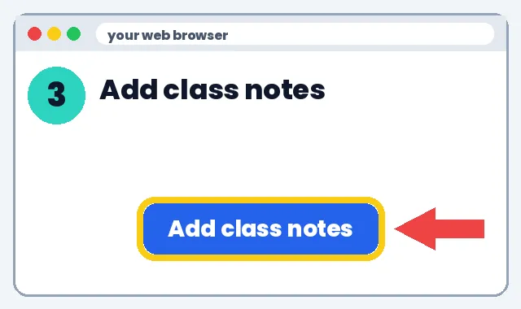
Click the Instructions box. Paste this.
Try 3 homework questions. Fix the rules if it gives answers.
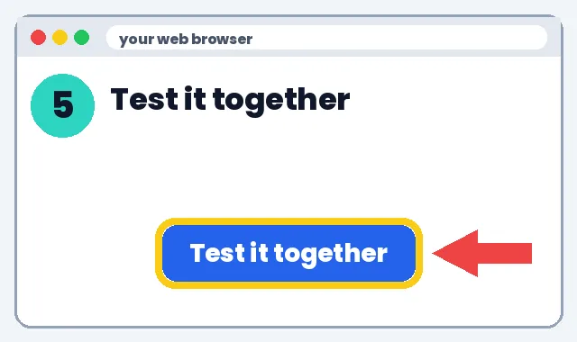
Look at the chats. Talk with the teacher.
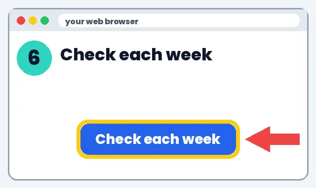
📚 How to build a lesson for your kid
- Topic + grade → 15-min lesson → 5-question quiz + answer key → activity → check facts
Go to gemini.google.com.

Pick the one for your child's age. Paste it. Fill in the [brackets].
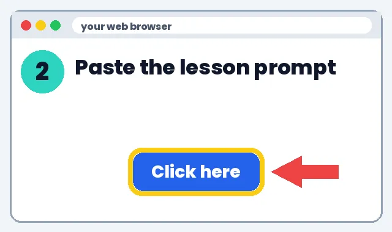
Read the lesson before you teach it.
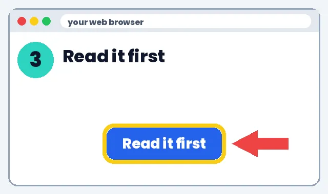
Look up one fact in a book or trusted site.
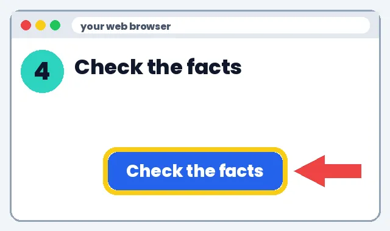
Do the lesson together. Use the quiz at the end.
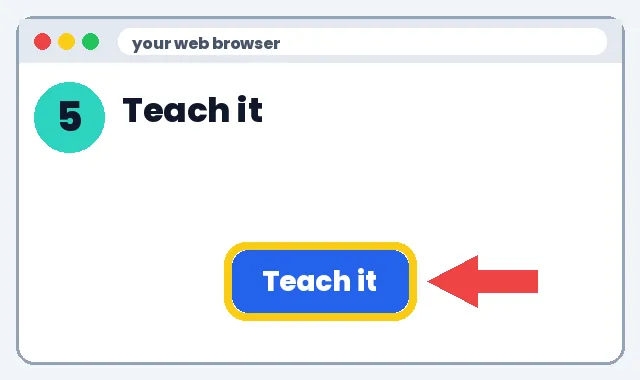
📚 A simple weekly AI routine for families
No tech experience needed. We'll show you every click.
Learn more
A 20-minute weekly plan
1️⃣ What it can do
- Builds learning habits without extra screen time.
- Keeps you in charge of every AI answer.
2️⃣ How to make it
- Sunday: ask your child what's coming up at school this week.
- Open gemini.google.com on your account and paste the weekly-plan prompt below.
- Mon–Thu: do one 10-minute activity from the plan together.
- Friday: a fun quiz or song made with AI.
- Ask the teacher what AI rules the class has, and follow them.
3️⃣ What to do next
Talking to your kids about AI
1️⃣ What it can do
- Helps them use AI honestly and safely.
2️⃣ How to make it
- Explain: “AI is a tool that can be wrong. We always check.”
- Agree on rules: no personal info, ask before using, use it to learn, not to copy.
- Ask them to show you how they use it at school.
- Praise effort and thinking, not just finished work.
3️⃣ What to do next
💰 Save money: discounts
- Khan Academy: Free lessons and practice
- Khan Academy Kids: Free learning app for ages 2-8
- PBS KIDS for Parents: Free tips and activities
- PBS KIDS: Free games and videos for young kids
- Libby (library app): Free e-books and audiobooks with a library card
See all deals for teachers & parents
Deals change, check the site. No affiliate links: we earn nothing from these.